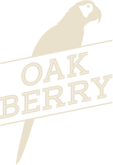

Estás dentro
Cualquier tamaño, cualquier combinación. Van por nuestra cuenta.
Desde el 16 de septiembre Tienes un mes para venir Todos los días, de 8:00 am a 9:00 pm. Tu invitación vale hasta el 16 de octubre.
¿No se guardó? Mantén pulsada la tarjeta y elige «Guardar en Fotos».
Tu nombre y ya
Dónde queda
OAKBERRY Plaza Andalucía
Av. Abraham Lincoln 850
Primer piso, local 55-A
Santo Domingo, RD
Abierto todos los días
8:00 am – 9:00 pm
OAKBERRY República Dominicana
@oakberry_rd